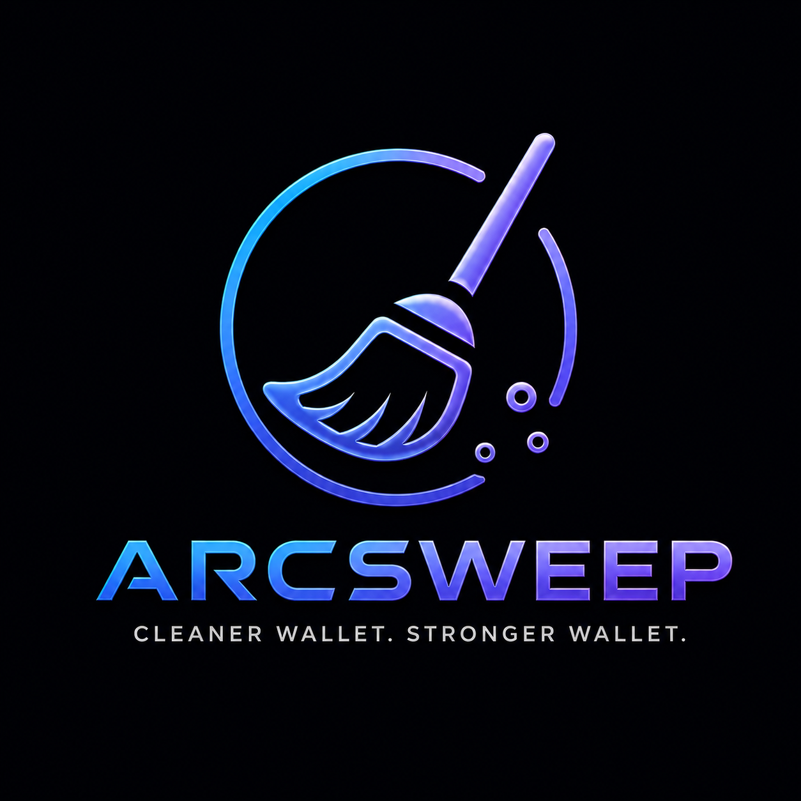

ArcSweep Arc Testnet dust cleanerArc Testnet
Dust to USDC aggregator
Clean tiny token balances in one reviewed sweep.
Detect low-value Arc Testnet balances, compare routes across DEX adapters, and convert selected dust into USDC with a clear safety checkpoint before signing.
Detected value
$0.00
Best output
0.00 USDC
Selected
0 tokens
Detected Dust
Token
Balance
Value
Route